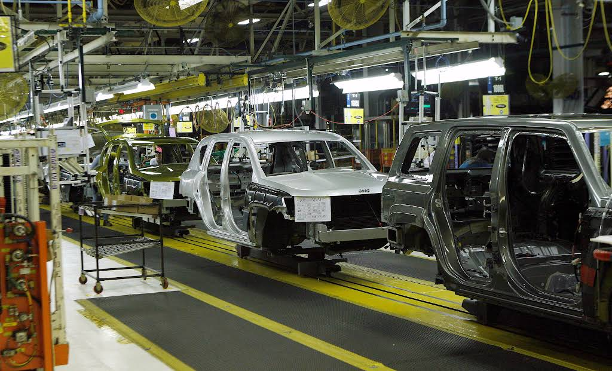

Current Active DTCs18-12% vs prior shift
Heavy Duty Vehicle Traceability & Diagnostics
Industrial QR Vehicle Monitoring System
Historical DTCs142+8% rolling 7 days
Vehicles Affected6-3 from yesterday
Average Detection Time0.42 s0.08 s faster
QR Scan Success99.8%+0.4 pts vs target
Current vehicle
3C6UR5FL5RG123456
- Vehicle program
- DJ
- Model
- RAM Heavy Duty 2500
- Assembly plant
- Saltillo Truck Assembly
- Assembly line
- Line 2
- Mileage
- 18 km
- Supplier
- Mopar
- Current station
- Roll Test
- Vehicle status
- Verified for release
Current DTC
P20EE
SCR NOx Catalyst Efficiency Below Threshold
- Severity
- HIGH
- Detected during
- Roll Test
- Detected by
- Final Vehicle Diagnostics
- Recovery time
- 0.42 s
Traceability timeline
Assembly verification path
- Receiving
- Final Configuration
- ADAS
- Roll Test
- Verified
Fleet impact
Diagnostic disposition
Vehicles with Active DTC6
Historical Vehicles32
Resolved Vehicles94
QR integrity
Recovered successfully
Diagnostic concentration
Top Diagnostic Trouble Codes
Vehicle mix
Vehicles by Program
Detection stage
Fault discovery by station
Current production area
Saltillo Truck Assembly

Decoded Vehicle QR
Vehicle ID STLA-DJ-123456
- Vehicle ID
- STLA-DJ-123456
- VIN
- 3C6UR5FL5RG123456
- Build date
- 2026-08-02
- Supplier
- Mopar
Recent Vehicles
Diagnostic scan history
| VIN | Vehicle | Program | DTC | Station | Severity | Status | Mileage |
|---|